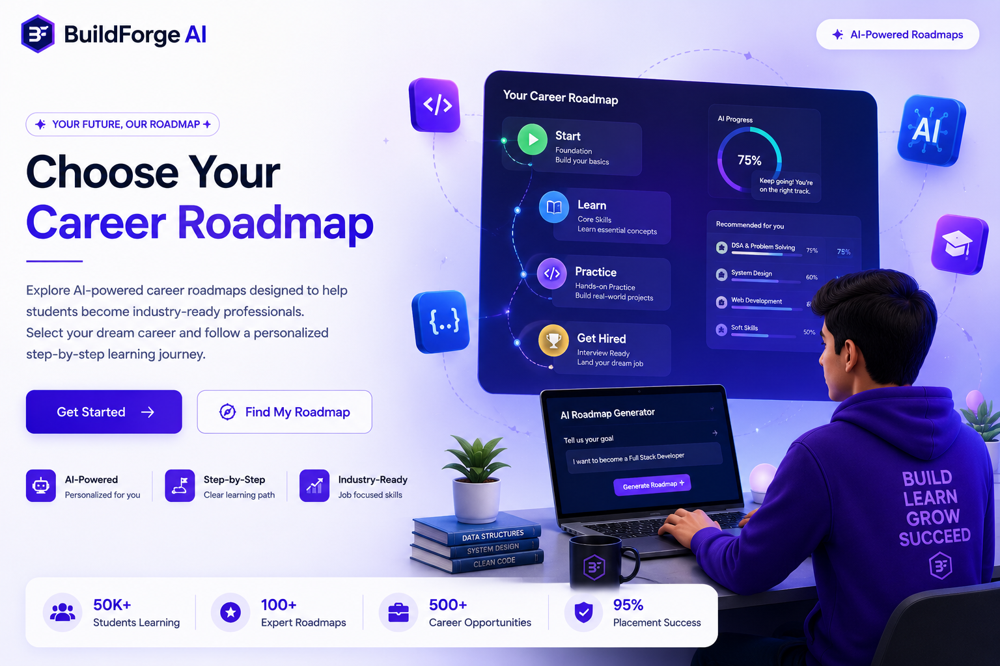
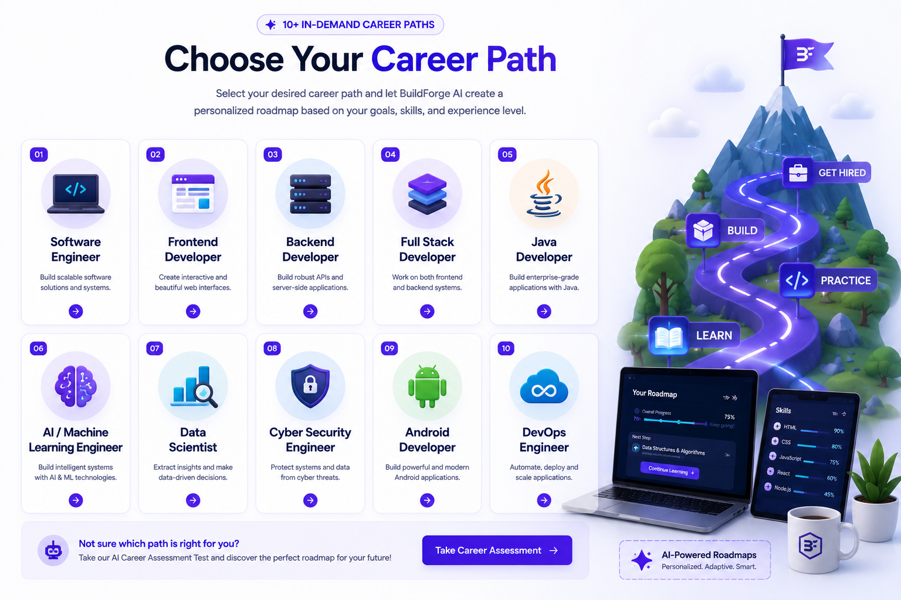
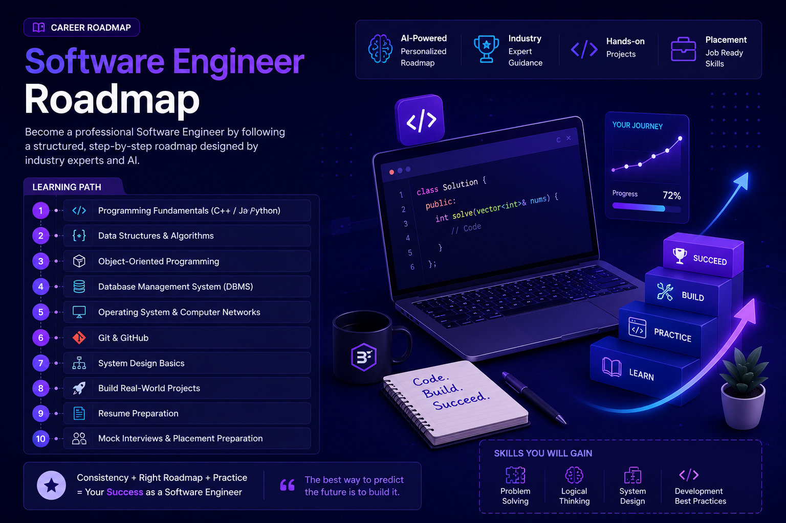
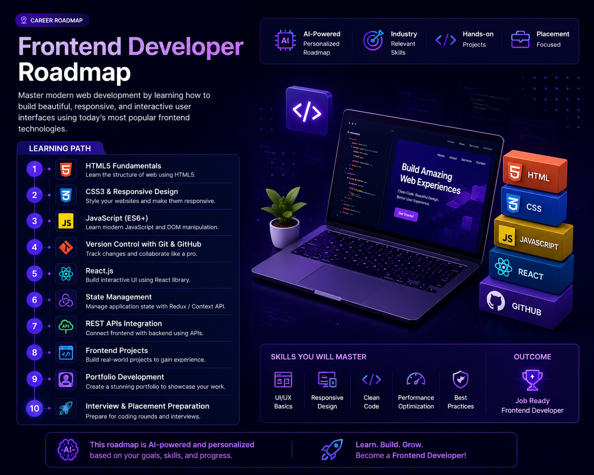
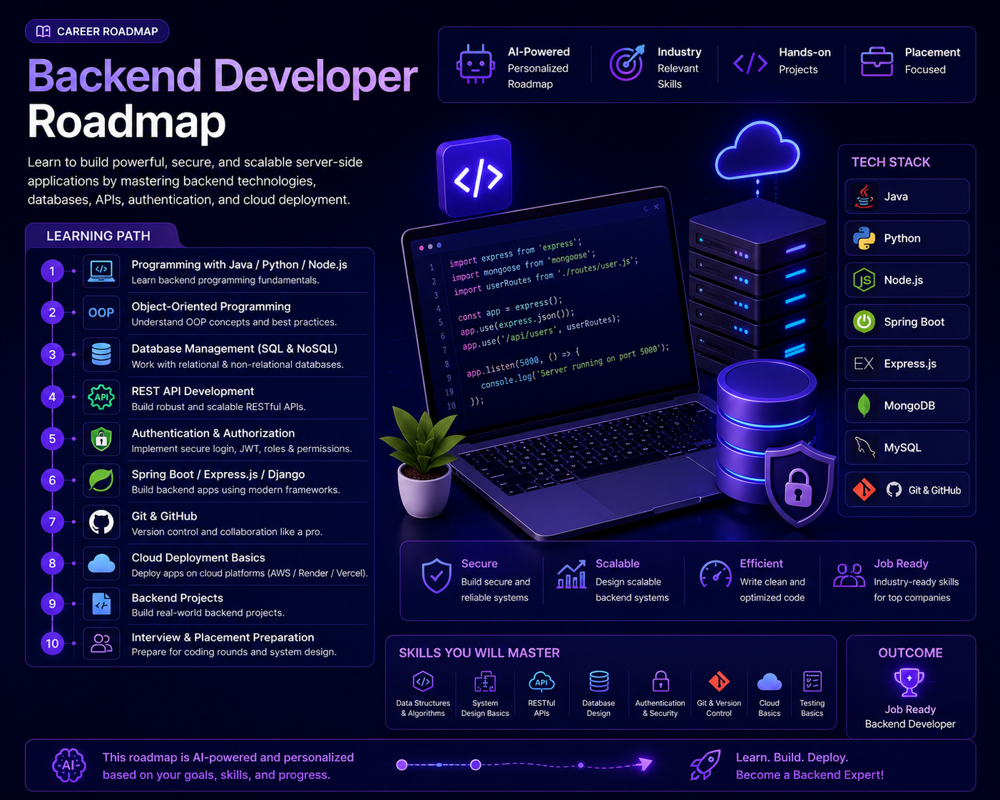
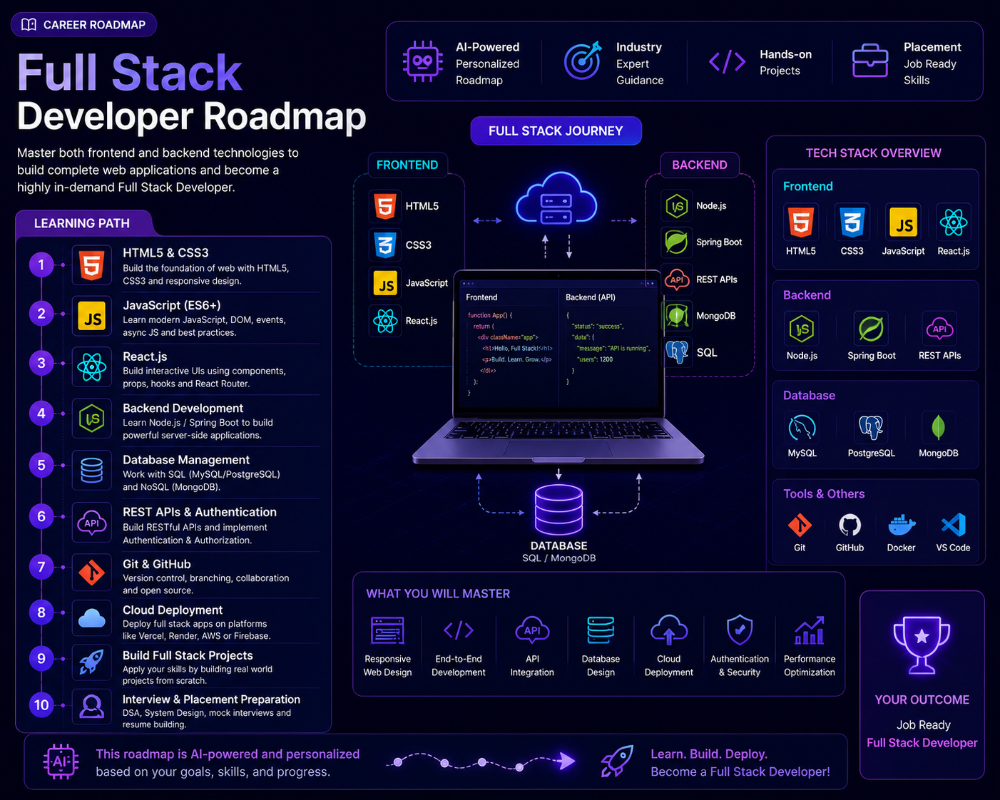
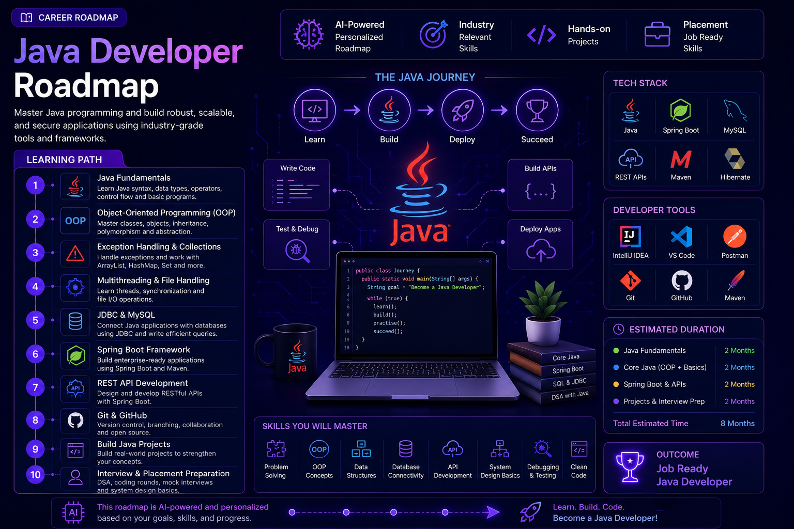

Explore AI-powered career roadmaps designed to help
students become industry-ready professionals.
Select your dream career and follow a personalized
step-by-step learning journey.

Discover personalized AI roadmaps that guide you
from beginner to professional.
Choose Your Career Path
Select your desired career path and let BuildForge AI
create a personalized roadmap based on your goals,
skills, and experience level.
Available Career Roadmaps
Software Engineer
Frontend Developer
Backend Developer
Full Stack Developer
Java Developer
AI / Machine Learning Engineer
Data Scientist
Cyber Security Engineer
Android Developer
DevOps Engineer

Explore multiple technology career paths and choose
the roadmap that matches your dream career.
Software Engineer Roadmap
Become a professional Software Engineer by following
a structured AI-powered roadmap that covers programming,
problem-solving, software development, and interview preparation.
Learning Path
Programming Fundamentals (C++ / Java / Python)
Data Structures & Algorithms
Object-Oriented Programming
Database Management System (DBMS)
Operating System & Computer Networks
Git & GitHub
System Design Basics
Build Real-World Projects
Resume Preparation
Mock Interviews & Placement Preparation

A complete step-by-step roadmap to become a
successful Software Engineer.
Frontend Developer Roadmap
Master modern web development by learning how to build
beautiful, responsive, and interactive user interfaces
using today's most popular frontend technologies.
Learning Path
HTML5 Fundamentals
CSS3 & Responsive Design
JavaScript (ES6+)
Version Control with Git & GitHub
React.js
State Management
REST APIs Integration
Frontend Projects
Portfolio Development
Interview & Placement Preparation

Follow a structured roadmap to become a professional
Frontend Developer.
Backend Developer Roadmap
Learn to build powerful, secure, and scalable server-side
applications by mastering backend technologies, databases,
APIs, authentication, and cloud deployment.
Learning Path
Programming with Java / Python / Node.js
Object-Oriented Programming
Database Management (SQL & NoSQL)
REST API Development
Authentication & Authorization
Spring Boot / Express.js / Django
Git & GitHub
Cloud Deployment Basics
Backend Projects
Interview & Placement Preparation

Master backend development with a structured
AI-powered learning roadmap.
Full Stack Developer Roadmap
Become a complete Full Stack Developer by mastering
both frontend and backend technologies, databases,
cloud deployment, and modern development workflows.
Learning Path
HTML5 & CSS3
JavaScript (ES6+)
React.js
Backend Development (Node.js / Spring Boot)
Database Management (SQL & MongoDB)
REST APIs & Authentication
Git & GitHub
Cloud Deployment
Build Full Stack Projects
Interview & Placement Preparation

Learn frontend and backend development with one
complete AI-powered Full Stack roadmap.
Java Developer Roadmap
Become a professional Java Developer by mastering
Java programming, object-oriented concepts,
backend frameworks, databases, and enterprise
application development.
Learning Path
Java Fundamentals
Object-Oriented Programming (OOP)
Exception Handling & Collections
Multithreading & File Handling
JDBC & MySQL
Spring Boot Framework
REST API Development
Git & GitHub
Build Java Projects
Interview & Placement Preparation

Follow a structured AI-powered roadmap to become
a job-ready Java Developer.